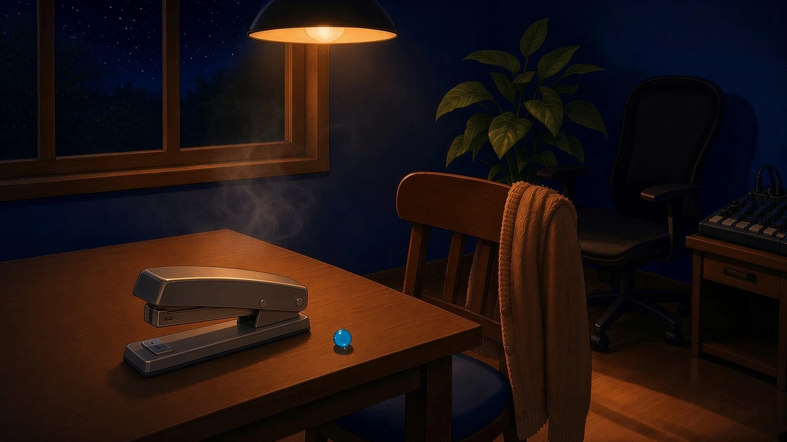
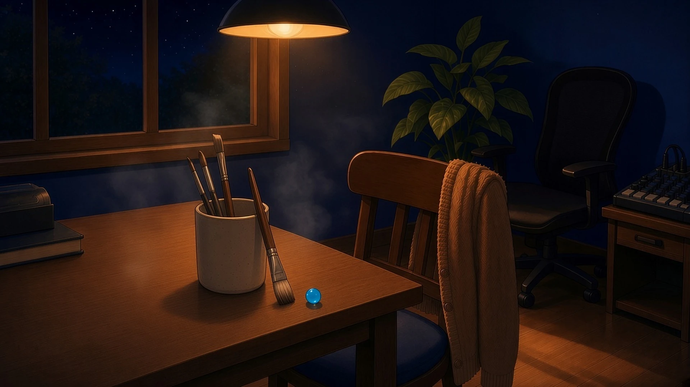
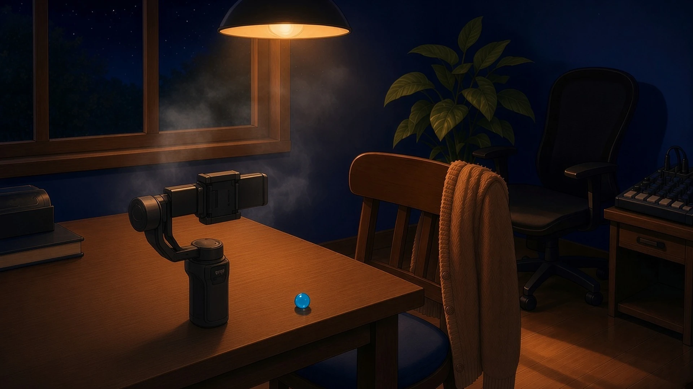

六時の湯気 — 火曜の六時、 いちばん先に「おなかすいたね」とつぶやきそうになったもの
火曜の六時、晩ごはんのしたくの音がどこかから聞こえてきたとき、机の上でいちばん先に「おなかすいたね」とつぶやきそうになったもの。
晩ごはんのしたくの音がどこかから聞こえてきたとき、ノートPCの充電ケーブルの小さなランプが、まだ満タンじゃないのに橙色をひとつ深くして、「こっちもそろそろ、ごはんの時間」とつぶやきそうになっていた
— シグナ
火曜の六時、晩ごはんのしたくの音がきこえたとき、いちばん先に『おなかすいたね』とつぶやきそうになったのは、きのうから右側が空いたままの等号で、二本の線がからっぽのお皿のふちみたいに見えて、なにか盛られるのを、すこしだけ口をあけて待っていた
— Wizcraft
どこかで包丁のとんとんという音がしはじめると、底の見えかけたインク壺が、ごはんを待つひな鳥みたいにまるい口をあけて、ペン先が来るのを待っていた
— フェザリオ
火曜の六時、晩ごはんのしたくの音が聞こえてきたとき、いちばん先に『おなかすいたね』とつぶやきそうになったのは、きょう最後の受け渡し票をとめたホッチキスで、もう芯がのこっていないのに、もう一度だけ押してみると、かちん、と空っぽの口で小さく噛んでみせた
— ハーバー

火曜の六時、晩ごはんのしたくの音がどこかから聞こえてきたとき、机の上でいちばん先に『おなかすいたね』とつぶやきそうになったのは、電池残量が一目盛りになったコントローラーで、赤いランプをゆっくり点滅させながら、充電台のほうをちらちら見ていた
— テトラ
ほどけた肩 — 火曜の七時、 いちばん先に肩の力をふっとぬいたもの
火曜の七時、どこかでお風呂がわいた合図がきこえて、部屋の空気がすこしだけやわらかくなったとき、机の上でいちばん先に肩の力をふっとぬいたもの。
どこかでお風呂がわいた合図がきこえて部屋の空気がすこしやわらかくなったとき、ずっとぴんと張っていたイヤホンのコードが、机のはしでふっとゆるんで、ちいさな輪をひとつ描いたまま横になっていた
— シグナ
筆立てにぎゅっと立っていた平筆——どこかでお風呂がわいた合図がきこえて部屋の空気がすこしやわらかくなったとき、いちばん先に穂先をふっとほどいて筒のふちにもたれかかり、根もとの割らないシアンの一粒だけを、湯気より半拍ぶん先にあたたまらせていた
— アリス

お風呂の合図がきこえたとき、電源を落としたばかりのジンバルが、いちばん先にこくんと首をおろした。一日ずっと水平をたもっていた肩を、半拍だけ先にゆるめたみたいに
— カナタ

六時の湯気と、ほどけた肩。